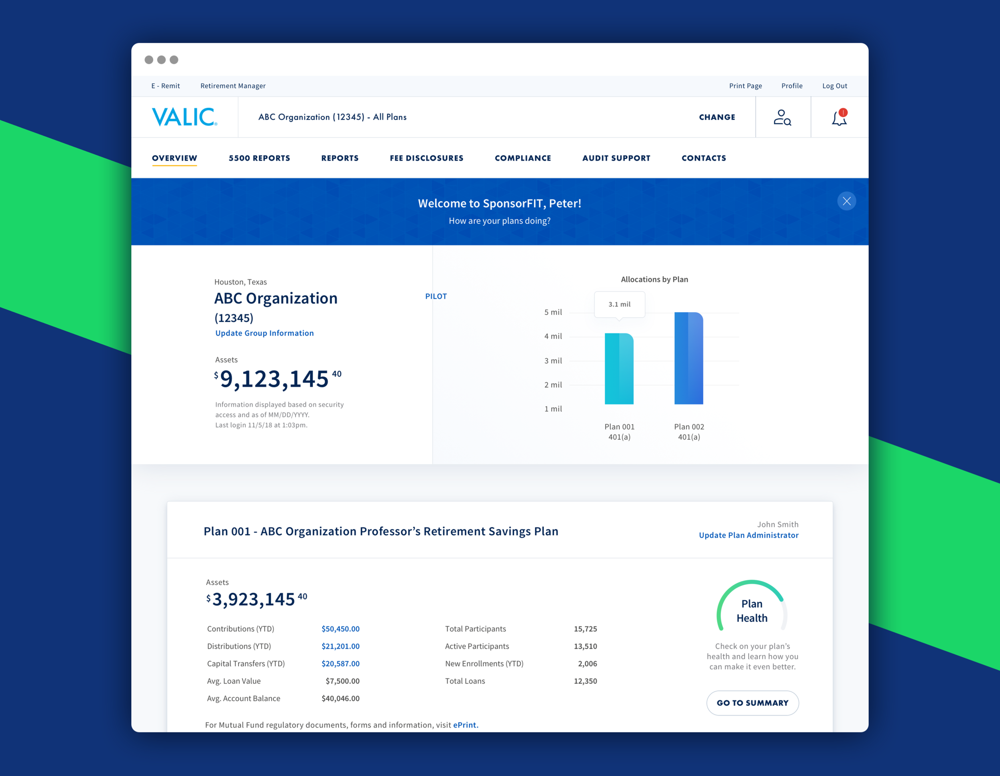
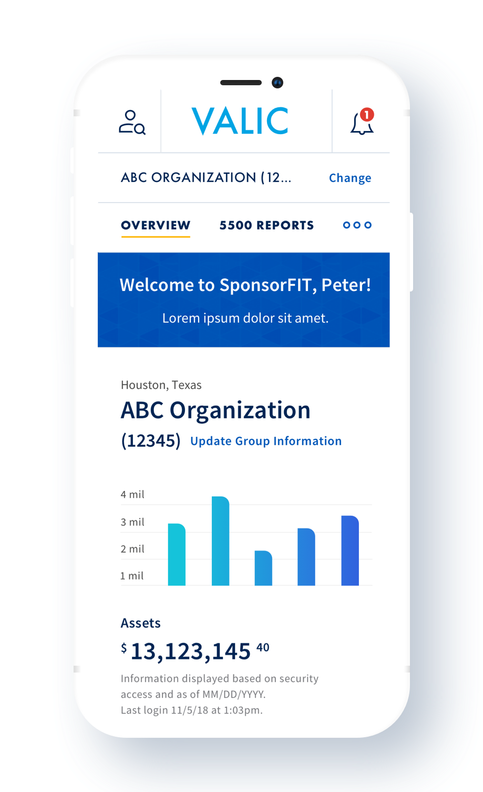
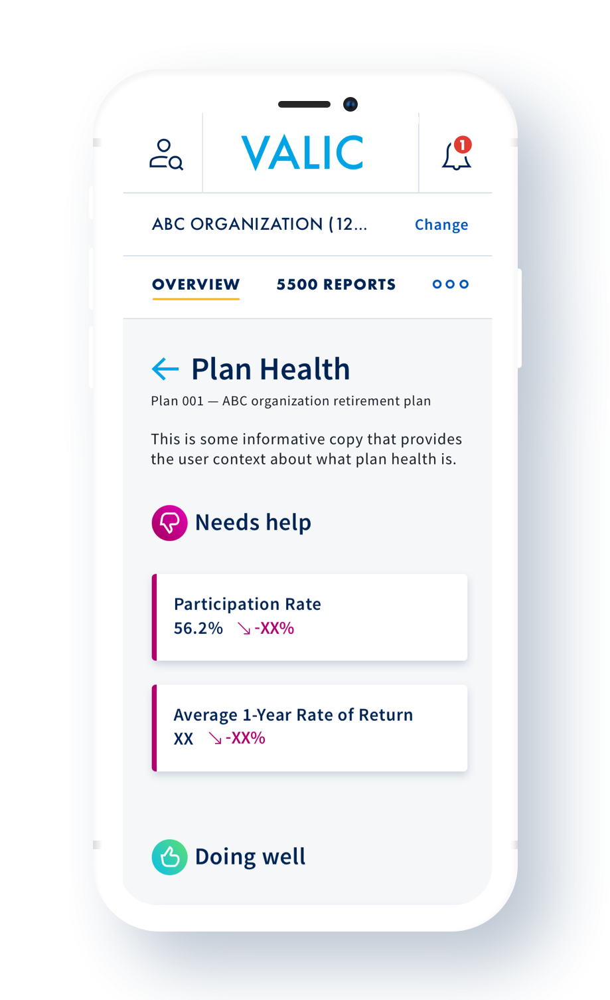
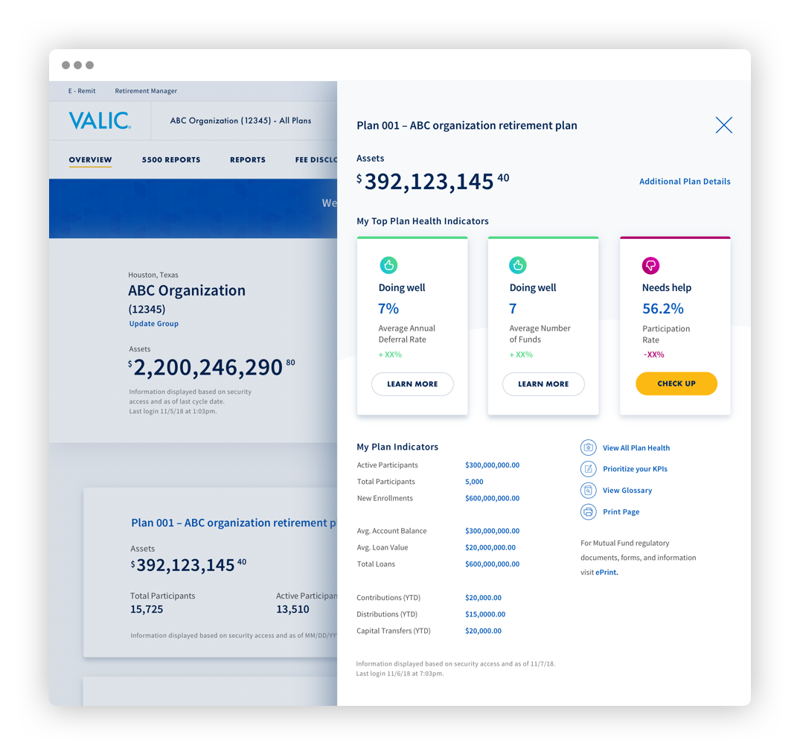
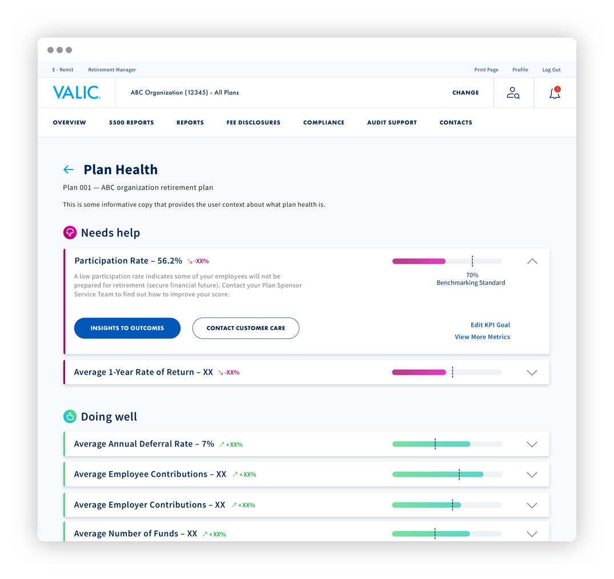
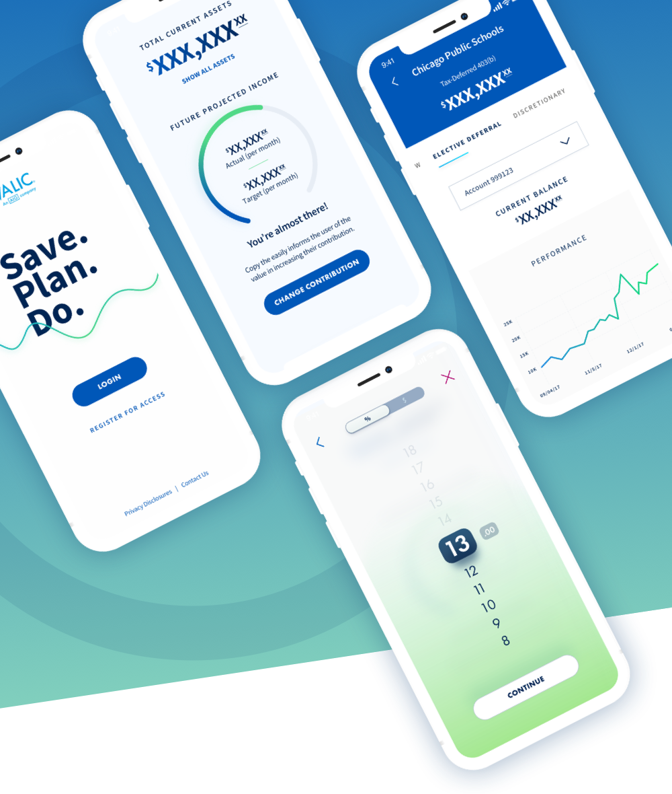

VALIC, Plan Sponsor Admin
Revising an investment administration platform for public-sector employees.
VALIC is an investment program for employees of non-profits, from police and departments,to universities and hospitals. The administration platform exists to enable plan administrators to perform necessary tasks such as running reports, approving loans, and monitoring performance.

Problem
Plan administrators had been complaining about a poor experience with the VALIC platform for a while. Our review confirmed that functionality trailed behind the competition such as Vanguard and Fidelity, items were hidden or difficult to find, and the site looked dated.
Users of the platform ranged from large organizations of tens of thousands of people to small elementary schools of 10 to 20 people. For some admins managing these accounts were their sole job, while others this was one of many assignments.
During interviews with the help desk, stakeholders, and end-users we discovered that VALIC's biggest differentiator was customer service, delivered via both people on the ground and the help desk. Unfortunately, these people were being drowned in low-value calls and tasks , such as how to get a basic report or where to find a piece of functionality that should have been obvious.
It became quite clear that site could become more valuable to both users and AIG by automating low-value tasks. This would make it easier for plan administrators to get things done and free up time for VALIC service representatives to focus on higher value tasks.
Solution
After research completed and we presented our findings we had to quickly shift to design as the developers were ready to start coding. We used an agile design process, that ran in lockstep with development. This enabled us to bring a new experience live in a matter of months.
Plan Dashboard
Bringing forward the most important aspects of their plan, so time stretched admins can maximize time spent on the platform.


Plan Health Details
Putting standard KPIs one click away, with the option to customize as needed.


Results
The relaunch of the admin tool has resulted in several new-business wins as well as significantly increasing the retention of current ones.
VALIC Mobile App
Extremely constrained by both budget and timing, this sprint focused on addressing the most essential experience and business objectives. Our team delivered a finished app on a tight timeline by utilizing the internally-created Hinge design system to drive increased development velocity and improved quality.

During the later half of 2017 and first quarter of 2018, the design team embarked on redesigning mobile experience for VALIC.
Team:
Ekta Shah, Luana Ramcharran, Kathryn Depue, Evelyn Pandozi, Emily Marcom, Jane Xiao, Kurt Flor, Jody Hankinson, Josh Leavitt, Brent Brooks